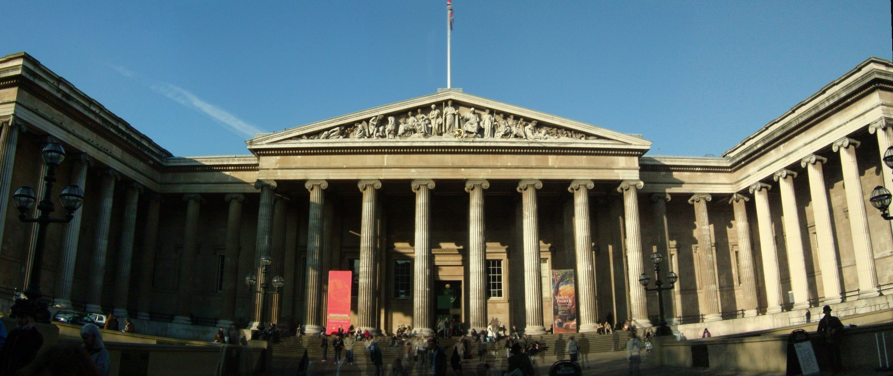
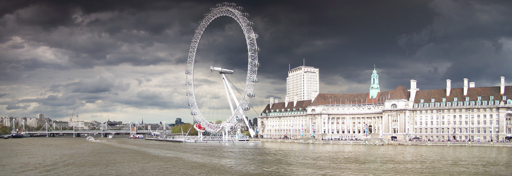

Lugares Emblemáticos de Londres
Londres, la vibrante capital del Reino Unido, es una ciudad llena de historia, cultura y emoción. Aquí, algunos de los lugares más icónicos que no te puedes perder:
Torre de Londres

La Torre de Londres, uno de los monumentos más antiguos e impresionantes de la ciudad, se alza majestuosamente a lo largo de las orillas del río Támesis. Construida en el siglo XI por Guillermo el Conquistador, esta fortaleza ha desempeñado numerosos roles a lo largo de los siglos, desde residencia real hasta prisión de alta seguridad. Hoy en día, es más conocida por albergar las legendarias joyas de la corona británica, incluyendo el famoso diamante Koh-i-Noor y la corona imperial utilizada en las ceremonias de coronación.
Palacio de Buckingham

El Palacio de Buckingham, la residencia oficial de la monarquía británica en Londres, es un símbolo de la grandeza y la elegancia real. Construido en el siglo XVIII, el palacio es famoso por su icónica fachada y sus lujosos interiores. Los visitantes pueden presenciar el espectacular Cambio de Guardia frente al palacio, una ceremonia que refleja la tradición y el esplendor de la monarquía británica. Además, durante ciertas épocas del año, las Salas de Estado del palacio están abiertas al público, brindando una rara oportunidad de explorar su opulento interior.
Big Ben y el Parlamento

El Palacio de Westminster, hogar del Parlamento del Reino Unido, es uno de los símbolos más reconocibles de Londres. Su imponente arquitectura gótica victoriana y su icónica torre del reloj, conocida como Big Ben, dominan el horizonte de la ciudad. Construido en el siglo XIX tras un incendio que devastó el antiguo palacio, el edificio alberga las dos cámaras del Parlamento, la Cámara de los Comunes y la Cámara de los Lores. Los visitantes pueden disfrutar de visitas guiadas para explorar sus magníficos interiores y aprender sobre la historia y el funcionamiento del gobierno británico.
Museo Británico
El Museo Británico es uno de los museos más grandes y prestigiosos del mundo, albergando una impresionante colección de arte, historia y cultura. Fundado en 1753, el museo cuenta con más de ocho millones de objetos que abarcan miles de años de historia humana. Desde los tesoros del Antiguo Egipto hasta las esculturas del Partenón de Atenas, pasando por artefactos de civilizaciones antiguas de todo el mundo, el Museo Británico ofrece una fascinante visión de la diversidad y la complejidad de la experiencia humana.
London Eye
El London Eye, una de las norias de observación más altas del mundo, ofrece una vista panorámica espectacular de la ciudad desde lo alto. Con una altura de 135 metros, los visitantes pueden disfrutar de una experiencia única mientras observan el horizonte de Londres y sus principales atracciones. Cada cápsula de la noria está equipada con paneles informativos que destacan los puntos de interés mientras se disfruta del impresionante paisaje urbano.